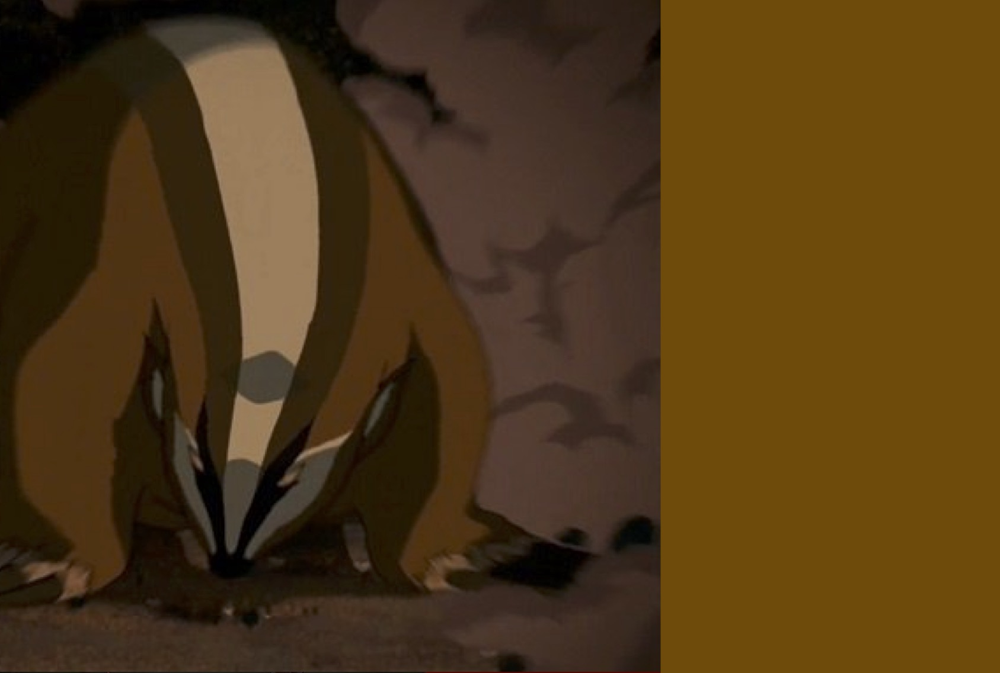

Burrows Through the Bedrock
TODO
SETUP:
Place 2 {presence} on the borders of land #5. They must be contiguous. (Contiguous {presence} is separated by 1 or fewer vertices).
Play Style:
Excels at destroying buildings near its presence and can push away explorers to prevent builds. Blight (and Blight cascades) can be especially bad because of how many lands it is considered to have presence in. Big earthquakes can clear large swathes of the island, but will restrict power targeting.
Tectonic Shift can drastically change the board and carve out areas of the island safe from invaders.